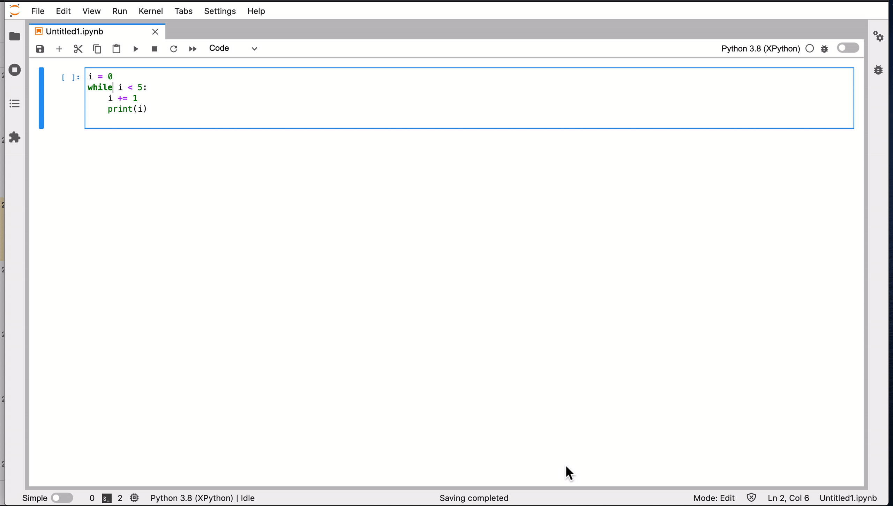
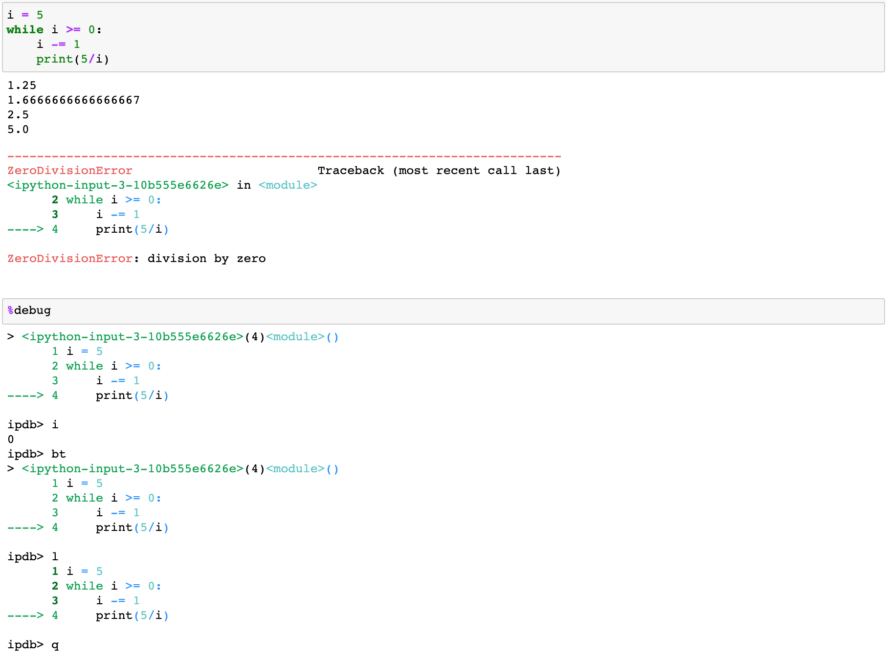

Jupyter workflow for data scientists¶
setup, debug, version control, and deployment
Many data scientists like to use Jupyter Notebook or JupyterLab to do their data explorations, visualizations, and model building. I know some data scientists refuse to use Jupyter Notebook. But, I love to use Jupyter Notebook/Lab to do my experiments and explorations. Here is a Jupyter Notebook workflow that might be helpful.
Setup¶
Setup environment¶
Whenever you are working on a new project, you should always have a new fresh environment to start with. If you are lazy and don’t want to create a new environment for every project, you should at least create one new environment that’s separate from your base environment and do your work in this new environment. To create a new environment, simply run conda create -n new_project python=3.8. Here I created a new environment called new_project. I specified the Python version when I create the environment, but you don’t have to. Now I can activate this environment by running conda activate new_project, and then install the necessary packages I need for this environment, e.g., conda install jupyter notebook pandas numpy. If you would like to use JupyterLab, make sure to run conda install jupyterlab.
Start Jupyter¶
To start Jupyter Notebook, run jupyter notebook in the command line. If you would like to start JupyterLab, run jupyter lab. JupyterLab is a web-based interactive development environment for Jupyter notebooks. It has a different interface and has more (easy-to-use) plugins and thus more flexible than Jupyter Notebook. The workflow between Jupyter Notebook and JupyterLab JupyterLab is similar. This article applies to both Jupyter Notebook and JupyterLab.
Start Jupyter from a remote server¶
A lot of times we want to run Jupyter from a remote server and work on it from a local browser. First, we need to set up the same environment on this remote server. Next, we need to set up port forwarding. Here we forward port 10000 from the remote machine to our local machine and start the notebook on this port. Note that the remote port and the local port don’t have to be the same, but I like to use the same port for simplicity. If port 10000 is not available, you can use other port numbers. Now you should see a link on your command line starting with localhost:10000. Copy and paste this link to your web browser, and you are all set to use the Jupyter Notebook from the remote machine on your local machine.
ssh -L 10000:localhost:10000 user@host
jupyter notebook --ip 0.0.0.0 --port 10000 --no-browser
Useful Jupyter commands¶
Most useful shortcuts¶
A: insert cell above
B: insert cell below
X: cut cell
C: copy cell
V: paste cell
D,D: delete cell
Z: undo delete cells
⌘ S: save and checkpoint
⌘ enter: run selected cell
shift enter: run current cell
time and timeit¶
The built-in magic function %%time outputs time execution of a Python statement or expression. %%timeit
measures time execution of a Python statement or expression by running it many times for better accuracy.
%%time
1+1
CPU times: user 3 µs, sys: 0 ns, total: 3 µs
Wall time: 5.01 µs
2
%%timeit
1+1
9.13 ns ± 0.0225 ns per loop (mean ± std. dev. of 7 runs, 100000000 loops each)
theme¶
JupyterLab has a built-in dark mode. You can find it at Settings - Jupyter Lab Theme - Jupyter Lab Dark. I don’t think Jupyter Notebook has a built-in dark mode yet. But you can use the Python package jupyterthemes to change your notebook theme. Check out jupyterthemes for details.
Debug¶
Jupyter visual debugger¶
Project Jupyter announced their Jupyter visual debugger back in March this year. Here is how to install the debugger if you are using JupyterLab 2.xx.
conda install nodejs xeus-python -c defaults -c conda-forge
jupyter labextension install @jupyterlab/debugger
Note that the debugger is already included in JupyterLab 3.0. If you are using JupyterLab 3.0 and above, you will only need to install xeus-python:
conda install xeus-python -c defaults -c conda-forge
To use the Jupyter visual debugger, click XPython in the JupyterLab New Launcher:

And then activate the debugger by drag the right corner button to orange, select a breakpoint with a red dot in front of the line, and play the callstack:

More information about the Jupyter visual debugger can be found in this blog post.
Jupyter Notebook %debug¶
Whenever we see an exception, we can use the %debug magic command to open up an interactive Python debugger.

%pdb on¶
Alternatively, we can also turn on the %pdb magic command to automatically run the debugger on an exception.

breakpoint¶
We can also use breakpoint and run debugger line by line. breakpoint also works for other code editors like VSCode.

Version control¶
jupytext and VSCode made version control so much easier for Jupyter notebooks. Before we jump into jupytext and VSCode, let me remind you why version control is annoying with Jupyter:
Jupyter Notebooks can be very large. If you have to push your Jupyter notebooks to Github, please remove all of your output. Otherwise, your Github repository can explode very quickly.
Jupyter Notebooks are saved as json files. It is difficult to read your notebook diffs on Github.
Now let’s talk about solutions. There are two approaches:
Approach 1: pairing .ipynb file with a .py file¶
The first approach lets you still use your .ipynb file. But when we work on those .ipynb files, we use jupytext (conda install jupytext -c defaults -c conda-forge) to pair your notebook with a .py file. Click “File - Jupytext - Pair Notebook with percent Script”. I prefer the percent script, which indicates cells in .py with # %% comment. But you can also use other formats. Now whenever we make any changes in the .ipynb file, the changes will automatically show up in the corresponding .py file. Then we can just do version control with this .py file.

Approach 2: work with .py file directly using # %%¶
The second approach lets you see Jupyter interface with .py files. With this approach, we don’t work with .ipynb files anymore. Instead, we work with .py files directly.
To see the Jupyter interface with .py files, we need to use the command # %% for each code cell. In VSCode, we can run this cell by clicking the Run Cell button (see image below). Similarly, when we have # %% in the .py files and have jupytext installed, Jupyter Notebook or JupyterLab can open the .py file as the regular Jupyter files you normally see.
Now all of our work will be in .py files, we can do our normal version control with those files.

Deployment¶
There are a lot of platforms and tools that can help you deploy your Jupyter Notebooks. For example, you can host your notebooks on binder for free. And there are a lot of other commercial products out there for deploying your notebooks into production.
However, what I would like to say is DO NOT deploy Jupyter Notebook .ipynb files directly in production unless your infrastructure is designed to deploy Jupyter notebooks. Please convert your notebooks to a normal Python script if you can.
Hopefully, you find this article useful! Thanks!
References:
https://blog.jupyter.org/a-visual-debugger-for-jupyter-914e61716559
https://ipython.readthedocs.io/en/stable/api/generated/IPython.core.debugger.html
By Sophia Yang on December 30, 2020. Also published on Medium